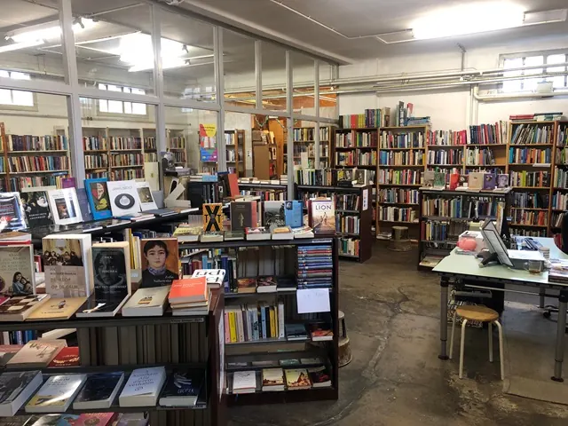
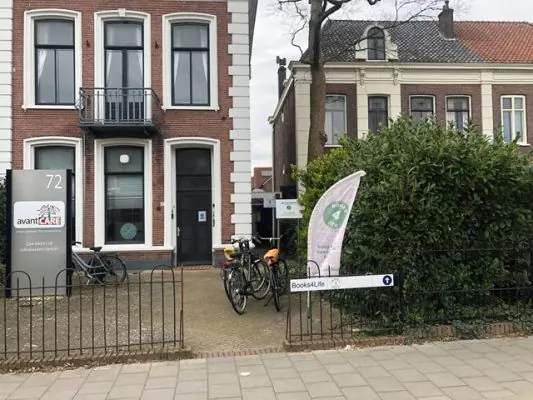

Nieuws ·
Books 4 Life viert 12,5 jarig bestaan met feestje op laatste dag van de Boekenweek 2024

De winkel in tweedehandsboeken, Books 4 Life Nijmegen, die al haar opbrengsten schenkt aan goede doelen, viert haar 12,5 jarig bestaan. De feestelijke bijeenkomst is op zondag 24 maart, en wordt omlijst met muziek van Tuesday Moon en optredens van Odin Dekkers en dichter en schrijver Wout Waanders. Tegelijkertijd worden er die middag de landelijke donaties uitgereikt aan Oxfam Novib en Amnesty International.
In 2011 kon niemand kon bevroeden dat de kleine boekwinkel van Books 4 Life aan de Tooropstraat uiteindelijk zou uitgroeien tot de volwaardige, breed gesorteerde winkel in tweedehandsboeken die het nu is. Destijds waren we al blij als we een paar boeken per week verkochten. Nu verkoopt Books 4 Life Nijmegen jaarlijks duizenden boeken in haar winkel aan de St. Annastraat 72.

Wat doet Books 4 Life?
Books 4 Life geeft boeken een tweede kans en verkoopt ze voor een zacht prijsje, omdat iedereen een boek moet kunnen lezen. Alle opbrengsten schenken we aan goede doelen. Die doelen hebben te maken met armoedebestrijding, mensenrechten en duurzaamheid. Ongeveer 40% van de jaarlijkse opbrengst wordt gedoneerd aan Amnesty International en aan Oxfam Novib. De andere helft gaat naar kleinschalige, humanitaire doelen uit de regio Nijmegen. Alle medewerkers werken op vrijwillige basis, voor een kop koffie en een gevulde koek over ‘t algemeen, maar vooral omdat ze gek op boeken zijn.
Het feestje op 24 maart
Op 24 maart zijn er optredens van het muzikale duo Tuesday Moon en geeft Odin Dekkers een lezing over de opkomst van de cosy crime en de verdwijning van Agatha Christie Daarnaast zal Wout Waanders, dichter en schrijver en voormalig stadsdichter van Nijmegen, het podium betreden.
Een speciale actie op die dag zijn de boeken die geschonken zijn door het Valkhof Museum. Een deel van deze bijzondere collectie, met veel boeken over Nijmegen, is dan te koop in de winkel.
Het feestje begint om 14.00 uur en is in de winkel van Books 4 Life aan de St. Annastraat 72. De toegang is gratis, iedereen is van harte welkom